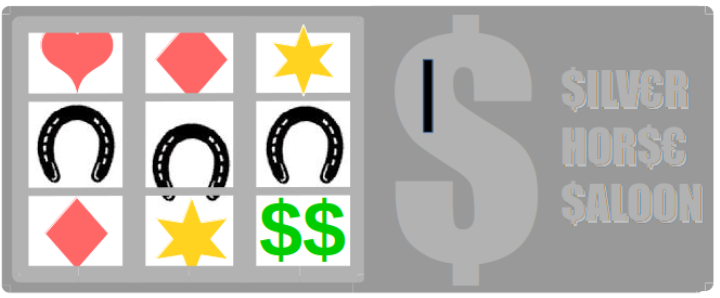

Ma langue au cheval¶
LANGUES VIVANTES
Joue le jeu des élus lulus. Leur sagesse proverbiale être traduite dans toutes les langues.
“L’argent ne se trouve pas sous les sabots d’un cheval” – élus lulu
Traduit ce joli dicton dans autant de langues que tu pourras le faire (à cheval ou pas).

C’est comme chercher le cheval à trois pates...
Tu donne ta langue au cheval ? Pas grave. Rappele toi, il n’y a pas de règles quand tu fait le jeux du promoteur. Tu peux demander de l’aide à tes amis, à ton cheval, ou aux élus lulus. Tu peux les concerter, pas de soucis. C’est juste les habitants grognones, les gnangnans et les voisins zinzins qu’il ne faut pas concerter. Et puis t’es pas obligé de savoir parlé, tu peux faire faire des traductions maux à maux, utiliser google translate, etc.
Q1. Liz taylor is rich¶
En anglais
Réponse
L'argent ne se trouve pas sous les sabots d'un cheval
no silver in horeshoes (except for lucky cowboys)
Q2. Comme un cheval espagnol.¶
En epagnol
Réponse
L'argent ne se trouve pas sous les sabots d'un cheval
El argentino no busca borrachos en los pasos de un caballero
... A CONTINUER